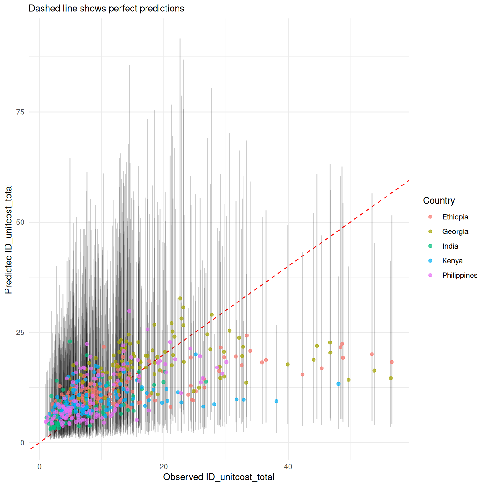
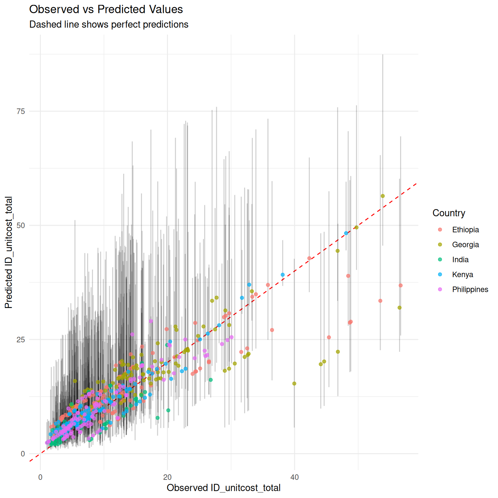
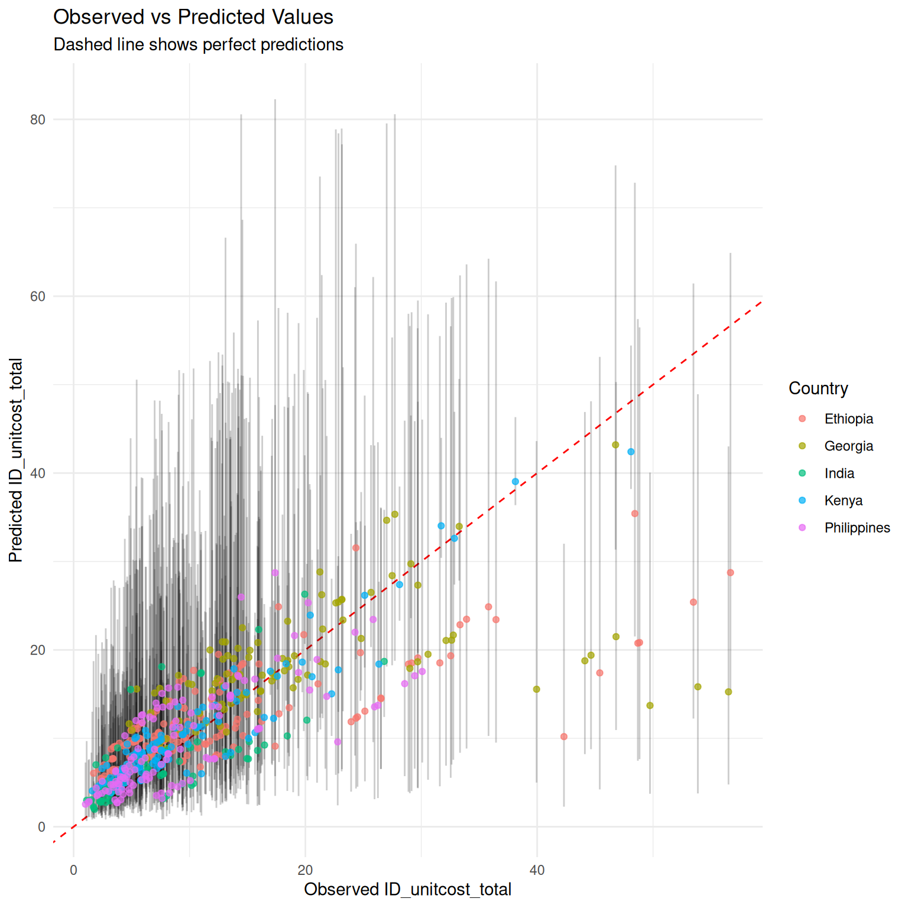

Combining predictions with primary data
2026-06-17
In some contexts it may be feasible to collect partial costs. The package provides two models to assist with this:
-
unitcost_fixed()- predicts the fixed costs of a single outpatient visit and can be combined with directly measured variable costs -
unitcost_ohd()- predicts the overhead costs of a single outpatient visit and can be combined with directly measured costs excluding overheads
Model Structures
Fixed costs vary very little by visit type, and overheads not at all by visit type, so the Fixed Unit Cost and Overhead Unit Cost model have a simpler structure than the Unit Cost Model.
For both, log costs are assumed to vary normally:
where is given by:
where represents the value of the jth covariate and the country of observation . The variable accounts for systematic differences across countries, and is assumed to vary normally about zero:
Comparing accuracy of each model
We compare the accuracy of predictions made by each of the models by looking at: 1. The cost of a single visit as predicted by the unitcost model. 2. The cost of a single visit as estimated by combining the directly measured variable costs in the raw data with the predictions for fixed costs made by the unitcost_fixed model. 3. The cost of a single visit as estimated by combining the directly measured non-overhead costs in the raw data with the predictions for overhead costs made by the unitcost_ohd model.
mod_uc <- capturetb::unitcost()
#> Multiple outputs detected. Including output-level random effects in model.
mod_uc_fixed <- capturetb::unitcost_fixed()
#> Single output type detected. Not including output-level random effects in model.
mod_uc_ohd <- capturetb::unitcost_ohd()
#> Single output type detected. Not including output-level random effects in model.
dat <- mod_uc$training_data()
mod_uc$plot_fit(include_ci = TRUE, scale = "natural", conditional = FALSE)
# get predictions of ohd costs
pred_ohd <- mod_uc_ohd$predict(dat, scale = "natural", summarised = TRUE)
#> Warning in private$.validate_data(dat): Unknown output types:
#> op_diagnosticvisit, op_treatmentvisit_ltbi, op_treatmentvisit_dot,
#> op_screeningvisit, op_vaccinations, op_coughtriage, op_treatmentvisit_mdr,
#> op_monitoringvisit, op_screeningvisit_mch, op_adherencesupportvisit,
#> op_treatmentvisit, op_visitforinjection, op_follow-upvisit,
#> op_visitforcollectingmedicine
# add observed non-ohd costs to get the total unit cost
non_ohd <- (dat$ID_unitcost_total - dat$ID_unitcost_ohd)
pred_total <- pred_ohd %>% mutate(Mean = Mean + non_ohd,
CI_low = CI_low + non_ohd,
CI_high = CI_high + non_ohd)
observed <- dat$ID_unitcost_total
results_df <- data.frame(
observed = observed,
country = dat$fc_country,
pred_total
)
ggplot2::ggplot(results_df, ggplot2::aes(
x = .data$observed,
y = .data$Mean
)) +
ggplot2::geom_abline(
slope = 1, intercept = 0, linetype = "dashed",
color = "red"
) +
ggplot2::labs(
title = "Observed vs Predicted Values",
subtitle = "Dashed line shows perfect predictions",
x = "Observed ID_unitcost_total",
y = "Predicted ID_unitcost_total",
color = "Country"
) +
ggplot2::theme_minimal() +
ggplot2::geom_errorbar(
ggplot2::aes(ymin = .data$CI_low, ymax = .data$CI_high),
alpha = 0.2, width = 0
) + ggplot2::geom_point(ggplot2::aes(color = .data$country),
alpha = 0.7
)
# get predictions of fixed costs
pred_fixed <- mod_uc_fixed$predict(dat, scale = "natural", summarised = TRUE)
#> Warning in private$.validate_data(dat): Unknown output types:
#> op_diagnosticvisit, op_treatmentvisit_ltbi, op_treatmentvisit_dot,
#> op_screeningvisit, op_vaccinations, op_coughtriage, op_treatmentvisit_mdr,
#> op_monitoringvisit, op_screeningvisit_mch, op_adherencesupportvisit,
#> op_treatmentvisit, op_visitforinjection, op_follow-upvisit,
#> op_visitforcollectingmedicine
# add observed variable costs to get the total unit cost
pred_total <- pred_fixed %>% mutate(Mean = Mean + dat$ID_unitcost_variable,
CI_low = CI_low + dat$ID_unitcost_variable,
CI_high = CI_high + dat$ID_unitcost_variable)
observed <- dat$ID_unitcost_total
results_df <- data.frame(
observed = observed,
country = dat$fc_country,
pred_total
)
ggplot2::ggplot(results_df, ggplot2::aes(
x = .data$observed,
y = .data$Mean
)) +
ggplot2::geom_abline(
slope = 1, intercept = 0, linetype = "dashed",
color = "red"
) +
ggplot2::labs(
title = "Observed vs Predicted Values",
subtitle = "Dashed line shows perfect predictions",
x = "Observed ID_unitcost_total",
y = "Predicted ID_unitcost_total",
color = "Country"
) +
ggplot2::theme_minimal() +
ggplot2::geom_errorbar(
ggplot2::aes(ymin = .data$CI_low, ymax = .data$CI_high),
alpha = 0.2, width = 0
) + ggplot2::geom_point(ggplot2::aes(color = .data$country),
alpha = 0.7
)
As would be expected, measuring a subset of costs improves accuracy of final estimates and somewhat reduces uncertainty, although uncertainty remains high.
perf_total <- mod_uc$performance(scale = "natural")
perf_ohd <- mod_uc_ohd$performance(scale = "natural")
perf_fixed <- mod_uc_fixed$performance(scale = "natural")
performance <- rbind("unitcost" = perf_total, "unitcost_fixed" = perf_fixed, "unitcost_ohd" = perf_ohd)
colnames(performance) <- c("MAE",
"RMSE", "95% CI Coverage", "Median CI width", "Bayesian R-squ")
knitr::kable(performance)| MAE | RMSE | 95% CI Coverage | Median CI width | Bayesian R-squ | |
|---|---|---|---|---|---|
| unitcost | 5.445497 | 8.003257 | 0.9690909 | 26.65703 | 0.4283608 |
| unitcost_fixed | 3.852224 | 5.736524 | 0.9739130 | 22.53696 | 0.4620700 |
| unitcost_ohd | 3.103807 | 4.661427 | 0.9672131 | 20.20858 | 0.4695934 |